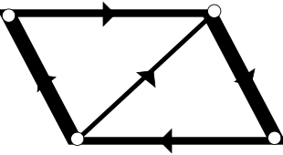

Graph Theory
Definition → A graph G is mathematical structure consisting of two sets V and E where V is a non-empty set of vertices and E is a non-empty set of edges
Example:


Basic Teminology
1→ Trival Graph → A graph consiting of only one vertex and no edge
Example: 0 v1
2→ Null Graph → A graph consisting n vertices and no edges.
Example: 0v1 0v2 0v3 0v4
3→ Directed Graph→ A graph consisting the direction of edges.
Example:
4→ Undirected Graph → A graph which is not directed then it is called undirected graph.
5→ Self Loop → If edge is having the same vertex as both its end vertices is called self loop.
Example:


6→ Proper Edge → An edge which is not self loop is called proper edge.
7→ Multi Edge→ A collection of two or more edge having identical end point.
Example: